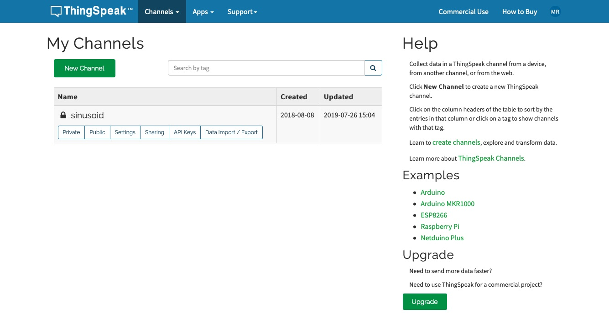
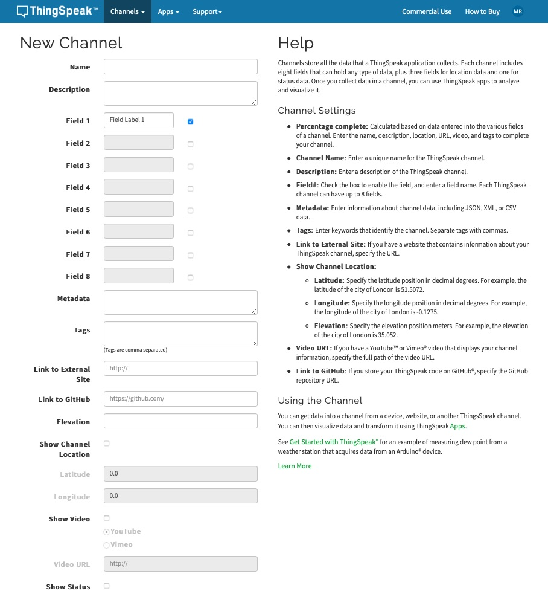
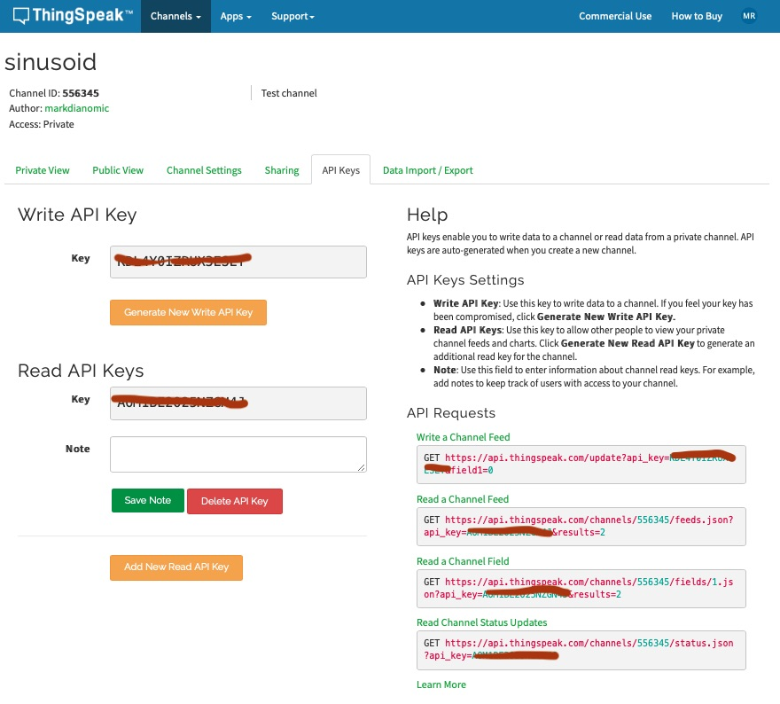
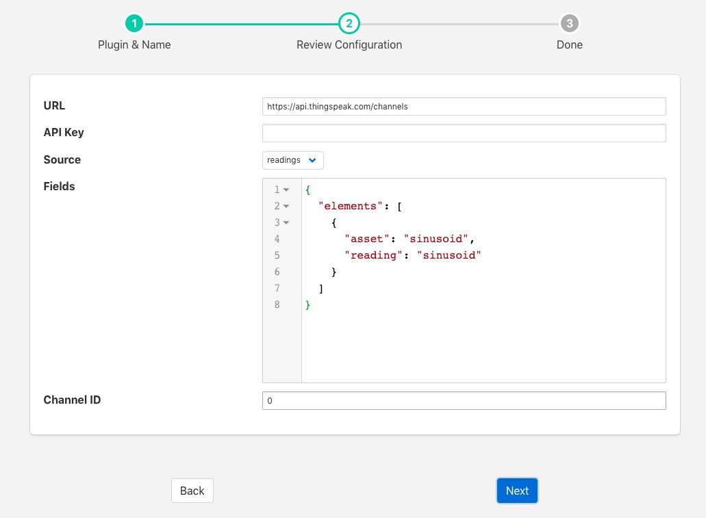

ThingSpeak¶
The foglamp-north-thingspeak plugin provides a mechanism to ThingSpeak, allowing an easy route to send data from an FogLAMP environment into MATLAB.
In order to send data to ThingSpeak you must first create a channel to receive it.
Login to your ThingSpeak account
From the menu bar select the Channels menu and the My Channels option
 Click on New Channel to create a new channel
 Enter the details for your channel, in particular name and the set of fields. These field names should match the asset names you are going to send from FogLAMP.
When satisfied click on Save Channel
You will need the channel ID and the API key for your channel. To get this for a channel, on the My Channels page click on the API Keys box for your channel

Once you have created your channel on ThingSpeak you may create your north task on FogLAMP to send data to this channel
Select North from the left hand menu bar.
Click on the + icon in the top left
Choose ThingSpeak from the plugin selection list
Name your task
Click on Next
Configure the plugin

- URL: The URL of the ThingSpeak server, this can usually be left as the default.
- API Key: The write API key from the ThingSpeak channel you created
- Source: Controls if readings data or FogLAMP statistics are to be send to ThingSpeak
- Fields: Allows you to select what fields to send to ThingSpeak. It’s a JSON document that contains a single array called elements. Each item of the array is a JSON object that has two properties, asset and reading. The asset should match the asset you wish to send and the reading the data point name.
- Channel ID: The channel ID of your ThingSpeak Channel
Click on Next
Enable your north task and click on Done